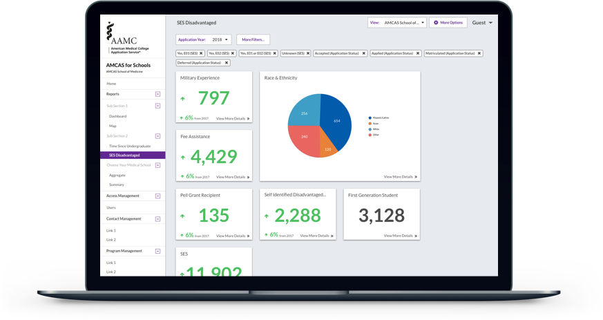
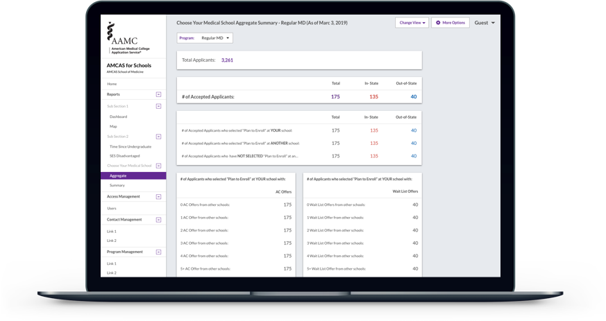
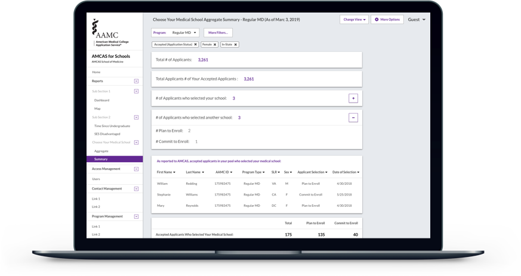

Brief
AMCAS 4 Schools is a new initiative to give Medical Schools greater insight into their student data. This is part of an overhaul of the old platform and this application is one facet of that product strategy. Creating this new application would give the AMCAS team a new revenue stream that was previously not available.
The old platform is out of date and had not been updated since the early 2000s. The platform was used to allow Medical School Deans & Administrators to view reports on their data and to see all student applications. This application will improve upon those reports and allow users to view their data in a dashboard. Users will be able to gleam greater insights through data visualization as well. This solution will not replace the current reports completely but will allow a new channel for those reports to be added [to this application] and updated when the time comes.
AMCAS is a service within AAMC to allow potential medical students to apply to medical schools. They contain multiple products for the application process that aid Students and Medical School Administrators. Currently, all US MD medical schools with the exception of those from Texas and some in California, are part of the AAMC family and utilize the AMCAS services to manage their student applications. This allows for standardization of application forms and processes to lessen the burden for potential students and medical schools.
My Role
In this role, I was the UX designer for the application. I worked closely with the Product Owners, Business Analyst, Project Manager, and Developers. We held weekly meetings to present designs and to discuss any new issues or new design work needed for the upcoming week. Besides the weekly meeting I was in constant collaboration with the team. UX was brought in during the initial requirements phase and we started working on the designs along side requirements gathering in an agile life cycle.
Process
We used a Lean UX approach throughout this project. We didn't want to start with a list of features and requirements. We needed to create something iteratively based on real user needs.
We focused on designing one part or feature of the application before moving onto another part or feature. Starting with the layout and navigation and then moving onto the 6 Reports. Each section took at least 3 Design Sprints before we were able to finalize the designs. Each Design Sprint was 1 week.
Lean User Testing

For each section we tested at least once with users. Our user base was difficult to get in contact with because they are usually pretty busy. We decided to only recruit 3 users for each test. We wanted to move fast and with limited time during sprints and difficulty scheduling we didn't want to waste time trying to schedule many users. We used the guerilla testing method. We did not have predetermined scripts, we gave the user an overview and asked them questions as they went through the prototype.
Discovery Phase
To gain a better understanding of what problems users encountered, user feedback was gathered by a mix of customer support emails and user interviews. We conducted 4 user interviews with 4 different medical schools.
From user feedback, there was a consensus of medical schools who found the current reports useful but would like to have more reports than just the ones provided. There were also some medical schools that did not utilize reports as is and took the data to manipulate in excel or their data analysis tool of choice.
To fill this need the team wanted to come up with a new product that would offer more flexibility and more reports than currently available. We started coming up with ideas for how this product should fit into the existing landscape of applications.
Product Strategy
The team started by conducting an exercise where everyone would write down on post-it notes their ideal solutions, current problems, or ideas to explore and then post it on the white board.
After putting up the post-it notes, we were all given 3 stickers to add to the post-its we thought were noteworthy and needed to be looked at further.
Based on this list we were able to identify what was important for a new product based on which post-its had the most stickers.
Eventually after discussion and based on the data from the session, we decided for the product to be a dashboard / reporting tool. This tool would give the user access to set reports and would allow the user to eventually create custom reports.
Success Metric
This being a new product there was no existing metric to compare our product against. Instead we opted to use the System Usability Scale (SUS) score. This is a simple 10 question survey that was given to users to determine usability of an application. SUS scores are useful because they are simple and can give valid data with very small sample sizes. Any score 68 or above is considered above average.
After the product design was finalized, we tested the prototype on 10 users and administered the SUS survey to determine success of the project.
New Global Navigation
For this new application, the first piece to tackle was how everything would be organized. The previous navigation was not holding up well over time. Based on use of the navigation in other products, there were issues that appeared when adding more links to the navigation because of limited space. The old global navigation was designed with only web in mind and not for products/applications.
 Old Navigation
Old Navigation
 New Navigation
New Navigation
Home Page / New Notifications
After discussion, it was not practical to land the user on the dashboard right away as some users may not have access to certain reports such as the dashboard. Landing the user on the home page first solved that issue.
The home page includes notifications that can be set by the AMCAS team to let users know about any upcoming updates or maintenance to the product among other events. Also, included in the home page is a way for users to see statistics or information based on their student data on a regular basis.
Eventually, this feature would be configurable by the user to show them the information they would want at regular times (i.e. daily, weekly, monthly).
Reports
The application is organized by reports with each link in the navigation being an individual report. The future state is to allow the user to configure their own reports but for MVP there will be a set number of reports offered.
The first report users would most likely see and use would be the Dashboard. To identify the most important data points and their priority in the dashboard, we sent out a survey to medical schools to understand their data needs.
There are 6 reports in total, including the Map.
Dashboard  SES Disadvantaged Report Time Since Undergraduate Report  Aggregate Report - Choose Your Medical School  Summary Report - Choose Your Medical SchoolDrill Down Views
The most important data points are displayed in the tiles. The tiles can be clicked on to view more details about the data point.
Initially the users are only concerned with their numbers and if they are improving or not. If a user notices a trend, they can then view more information by clicking into the tile to view the data in further detail.

Filters
Filtering can give the user a way to view the reports and customize them on the fly. This would be a stepping stone to full customization but for MVP, filters are only ad hoc and not able to be saved. To better understand what filters would be needed we sent out a survey.

Showing Data Together (Data Views)
Another feature which allows greater insight for users is to allow them to compare their data against the entire pool of medical school applicants at the national level. This can give them greater insight into how they are doing compared to the average.
 Showing only the Schools data
Showing only the Schools data
 Showing both the Schools data and National data
Showing both the Schools data and National data
Different Views of Same Data
Data visualization is best when viewing the data in different presentations, insights that were not seen before become apparent. A couple of the reports were designed to be viewable in different presentations.

Map
Allowing users to view their data in a geographic visualization gave them greater insight into where their students were coming from. This map shows data down to the county level. When viewing the county data further data points show up in the tiles below the map.

Conclusion
Starting from scratch and beginning in the initial stages of product development was a great learning experience though not without a steep learning curve. This product team was quite large and managing feedback and communication between everyone was a challenge on this project.
Overall, this product came together and we can use what was learned to help improve the process for product concept development in the future.
Currently, the product design has been approved and the MVP is in final stages of development as of October 2018. The SUS score of the final product design was 80 (average score of 10 users)